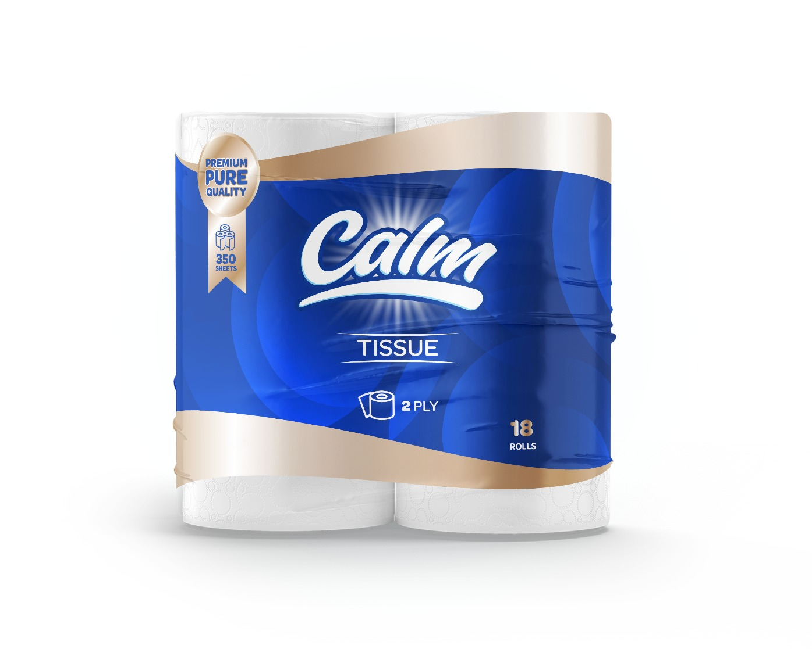

Quality
High-quality tissue products designed to deliver dependable hygiene, comfort and value.
We manufacture dependable tissue and hygiene products close to the markets and communities we serve.
Our purpose
Founded in South Africa by a Motswana entrepreneur, Calm Tissue proved its products in a competitive retail market before bringing its manufacturing vision home to Botswana.
High-quality tissue products designed to deliver dependable hygiene, comfort and value.
Responsive service, transparent lead times and dedicated support shaped around customer needs.
Ethical, accountable relationships that build lasting trust with customers and stakeholders.
Our journey
Calm Tissue’s story crosses borders, but its ambition has always pointed home.
Calm Tissue begins trading in South Africa, learning directly from consumers and the demands of established retail.
The brand reaches customers through channels including SPAR, Makro Online, Uber Eats and other chain stores—building practical market knowledge and confidence.
Calm Tissue opens its factory in Selibe Phikwe, turning commercial experience into local industrial capability, jobs and regional opportunity.
The tissue-paper manufacturing project meets SPEDU’s assessment criteria and Calm Tissue becomes a fully registered SPEDU client.
Retailer names describe historical sales channels and do not imply endorsement.
Manufacturing excellence
From jumbo roll conversion to finished pack, our approach puts process discipline, quality control and continuous improvement at the centre.
Discuss supply requirements →Our portfolio
Consumer and commercial tissue solutions made for homes, businesses and institutions.
One dependable Calm standard, available in a pack size for every household, business and institution.
2-ply · 350 sheets per roll
Request product details →
Made for everyday comfort
The embossed 2-ply construction combines a soft hand-feel with dependable everyday performance—made for homes, workplaces and institutions.
Our home
Our factory is based in Selibe Phikwe, a town within Botswana’s SPEDU region. From here, Calm Tissue is building local manufacturing capability with a clear outlook toward wider Southern African markets.
Botswana partnerships
Calm Tissue is a fully registered SPEDU client, supported by national investment, trade and country-brand platforms.
Who we serve
Our vision
“To become one of Southern Africa’s most respected hygiene manufacturers—known for quality, reliability and regional impact.”
Work with Calm Tissue
For distribution, institutional supply, retail partnerships or general enquiries, start a conversation with our team.
Factory